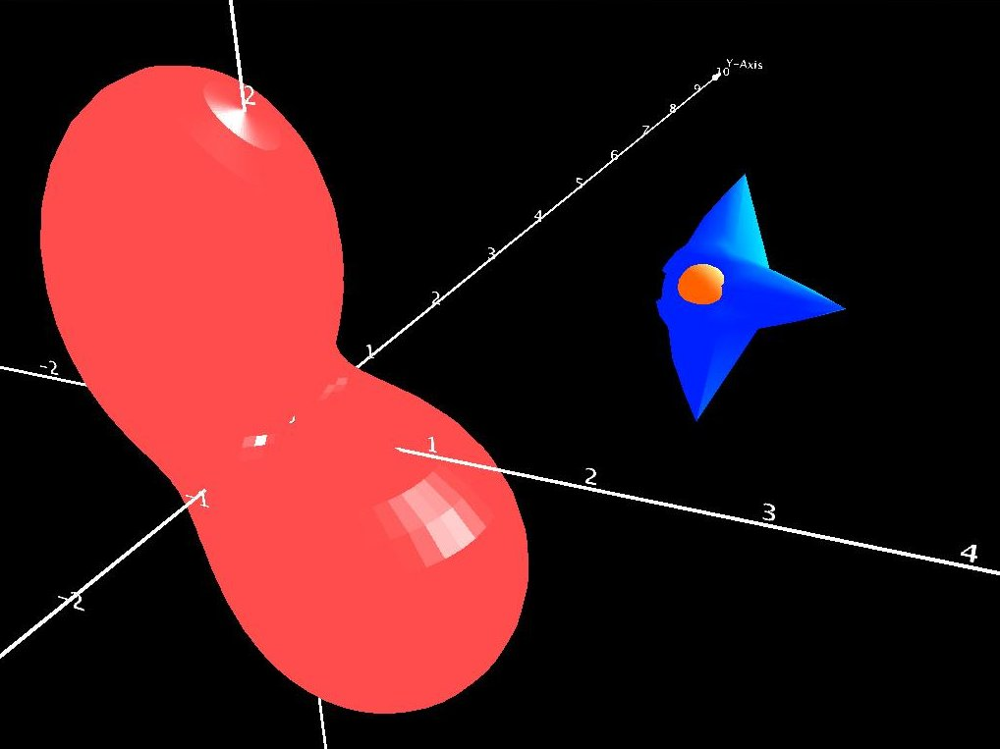

A quick note on the nomenclature "six degree of freedom", or 6DOF, as used in this project. The term 6DOF is not meant to be the formal definition encountered in academics. It simply means that in addition to using accelerations along the X, Y, and Z axes to compute translational position and velocity, angular accelerations about the these axes are also used to compute attitude and angular velocity. For a rigid body, translational motion is fairly simple to model because movement along each axis can be treated independently when all forces are resolved about the body's center of gravity. This process involves translating each force acting on the body to be through its center of gravity and then computing the resulting torques induced by those forces before integration of the equations of motion. This simplification does not exist for rotational motion. A lack of symmetry in the vehicle's mass distribution results in a torque about one axis inducing accelerations about other axes. In addition, even for a completely symmetric body (say, a sphere), gyroscopic coupling results in accelerations about a third axis due to angular rates about two other axes! The math is not difficult - just a bit more involved.
In applied engineering, the terms 6DOF and 3DOF are often used to distinguish between simulations modeling rotational dynamics vs. kinematics. The models often have many more degrees of freedom. Because so many degrees of freedom may exist in a complicated model, describing that model by listing the total number of degrees of freedom becomes a bit nonsensical.
Within the VSE, models, along with classes used to run them in a simulation, are packaged individually as libraries. The actual model typically consists of two core classes. The most basic represents a system of differential equations doing nothing more than taking the current time and state vector as inputs, outputting the corresponding derivatives to that state vector. See intxm.IDiffQ.getXDot() for the basic interface. The class msd3D.MassSpDpDQ is an example of the equations of motion for a mass, spring, damper. The class trmtm.Simple6DOFdq, also implementing IDiffQ is used by orbiter.Orbiter. It is instantiated within the trmtm.Simple6DOFSys abstract class - the 6DOF library model previously alluded to. Simple6DOFSys implements intxm.ISysEqns, which guarantees functionality related to the State-Space and propagation of a dynamic model.
Simple6DOFSys.finishModel() is an abstract method allowing the user to add forces acting through the modeled body's center of gravity, field forces, accelerations, and torques. This class offers a great deal of flexibility with respect to modeling without further knowledge of rigid body dynamics. The body force input may be thrusts due to a propulsion system, environmental influences, etc.... Field forces could be the result of something such as a magnetic field. Gravitational potential is a common acceleration. Control surfaces and attitude control systems may impart torques about the body. All of these inputs can be computed external to these library classes based on the model's current state. The differential equations class, Simple6DOFdq, queries the system for these inputs during the integration process. The integrator used within the Simple6DOFSys class is currently hard-coded to be intxm.RK4 (implementing intxm.IIntegrator). Simple6DOFdq and Simple6DOFSys are aware of each other.
The remaining classes in each model package define the simulation environment and usually contain objects that generate the GUI, set up the 3D environment, select the solid model, and connect the 3D environment to the simulated model (orbiter.OrbiterVisModel). User input controls (keyboard, mouse, etc...) are configured in one of these classes as well. The primary class in each model implements an interface needed to start the simulation (orbiter.Orbiter). This class either needs to be instantiated within an application to run, or launched directly with the RunVSE application. The JAR file containing the supplied launcher is called RunVSE.jar.
The VSE supports this central model paradigm. However, the method employed by the Orbiter simulation propagates the rotating central body and vehicle states independently. The following lengthy outline of the Orbiter model includes a description of the classes built to handle all the time synchronization issues that arise when propagating each model independently.
Everything starts with the orbiter.Orbiter class. It implements the servm.ISimModel, which guarantees a public void run() method. This method is used by an application that will instantiate the Orbiter class and then launch it.
Orbiter creates a j3d.SimV3Dcfg object containing simulation configuration options. A display refresh rate obtained from the SimV3Dcfg object is used to initialize a j3d.ModelTimeBehavior object. This important extension of the Java3D Behavior controls the overall progression of time. There are two versions of time within the simulation. The first is computer, or clock time. It advances at the output rate plus the time it takes to perform all computations related to propagating each model and updating the display (the output rate is not the underlying graphics refresh rate). In contrast, simulation time marks the progression of time within the simulation. If the simulation time is set to progress at 60 times that of the clock, then only one minute of clock time would pass for an hour of simulation time (ignoring lag time due to computations). For a computationally intensive simulation, it may not be possible to have simulation time out-pace, or even equal, clock time.
Once initialized (during the instantiation of j3d.SimV3D, occurring at the end of Orbiter.run()) , the Behavior's wakupon() method is called with a Java3D WakeupCondition that will cause the simulation to sleep for the duration of the configured output rate. Upon waking up, the "processStimulus()" method is called which updates the simulation time. Each model has a j3d.IVisualModel object associated with it that then triggers an IVisualModel.update() method. As previously mentioned, implementation of an IVisualModel is what ties the mathematical model to the visualization environment.
After the ModelTimeBehavior is instantiated, A cycxm.ModelStepper object is created and initialized with an integration step and output step size. This class manages timing related bookkeeping for a model relying on some form of numeric integration (or propagation by sequential discrete step sizes). It determines how many integration steps are needed to meet a larger output step size. For non-graphic output, the output rate could be the frequency at which numeric data should be written to a file. For this scenario, it is the length of time between updates to the Java3D display (most likely larger than the Java3D refresh rate). The ModelStepper.stepper() method documentation describes what happens when the output rate is not a multiple of the integration step size. Multiple ModelStepper objects can be created to manage models requiring different integration step sizes.
Models for the central body (trmtm.RotatingBodySys) and orbiting vehicle (orbiter.OrbiterSys) are then created and their states initialized. Both of these objects implement intxm.ISysEqns. A two element array of IVisualModel objects is then created. The first is j3d.RotatingBodyVisModel for the central body and orbiter.OrbiterVisModel for the orbiter. As stated before, these classes link the math models to the visualization environment. For example, orbiter.OrbiterVisModel defines how the orbiter model reacts to keyboard inputs.
The constructors for both IVisualModel objects make use of Java3D TransformGroup objects containing the solid model. As described by the Java3D documentation, a "...TransformGroup node specifies a single spatial transformation, via a Transform3D object, that can position, orient, and scale all of its children." What this means is the TransformGroup is the object that is modified to change the graphic representation of the model state.
The array of IVisualModel objects is then registered with the ModelTimeBehavior object allowing it to manage the process of updating the state of each model from one output interval to the next. All models will output at the same rate. However, not all models will need to use the same integration step size. The order in which each IVisualModel appears in the array is the order in which each model will be updated. For maximum accuracy, the state of independent models should be updated before that of dependent ones. For example, with the orbiter simulation, the orientation of the central body must first be computed to determine the gravitational potential exerted on the vehicle. The twist is most integration methods, such as the RK4 one, require the state of influences acting on the model at intermediate points between between not only each output, but between each integration step. The Orbiter example is easy to handle because the central body model is a simple analytic function - the total rotation angle is equal to the initial angle plus the angular velocity multiplied by the total time. When the ModelTimeBehavior tells the OrbiterVisModel to update, the ModelStepper integrates the orbiter's equations of motion, propagating its state forward by the integration step size. This causes the integrator to call the Simple6DOFdq.getXDot() method, which in turn calls the OrbiterSys.finishModel() method. This method requests the state of the central body at multiple intermediate points between the integration time step. Being a simple analytic model, the central body recomputes its attitude for each requested time.
If the central body dynamics were based on a more complicated model, then a decision would need to be made regarding how to handle retrieving its state. One option is to simply use the latest central body state for all calls by the orbiter's integrator (no change in influences for each time step during the integration period). This is the most efficient method and may be accurate enough for many simulations. An alternate method would be for the central body model to continuously recompute its state on each call from some previous time to the time requested - this could be costly in terms of computational burden but simple to implement. Yet another option would be for the central body to internally buffer a set of state vectors spanning the output step size, allowing for quick interpolation of the central body's state at intermediate times. A forth method would be to make use of a simplified linear model for short term propagation of the central body's state (similar to a state-transition matrix). The final decision rests with the designer of the model. The goal here is to simply bring light to this potential problem.
After initializing the array of IVisualModel objects, a Java3D BranchGroup is created for each model with the j3d.SimpleBGModel class. A BranchGroup can be thought of as a basic self contained unit that can be inserted independently into the Java3D virtual universe. It contains the visual representation of the model along with the logic needed to update itself and react to outside stimuli. This is where keyboard controls are connected using the j3d.KeyBehavior class. In addition to keyboard controls, the SimpleBGModel class can also create its own ModelTimeBehavior for simulations based around a central model, alleviating the need for the user to create them outside of this class. The SimpleBGModel could just a well be passed to any external Java3D application requiring a BranchGroup object. Note that the VSE uses a "Z-axis up" reference frame, where a rotation of -90 deg about the X-axis is made from the Java3D "Y-axis up" reference frame.
The final step is to instantiate a j3d.SimV3D object with the SimV3Dcfg object and the array of BranchGroup models. From here, SimV3D.init() creates the basic GUI interface. Instantiation of j3d.SimV3DJPanel completes the GUI and fires up the simulation with the creation of a Java3D SimpleUniverse.